核对户型
识别墙体、门窗与房间，核对尺寸和入口关系。
AGENT SKILL / 家装设计
从一张户型图开始，逐步完成家具布局、装修风格、可编辑的 2D / 3D 工作台和全屋导览。
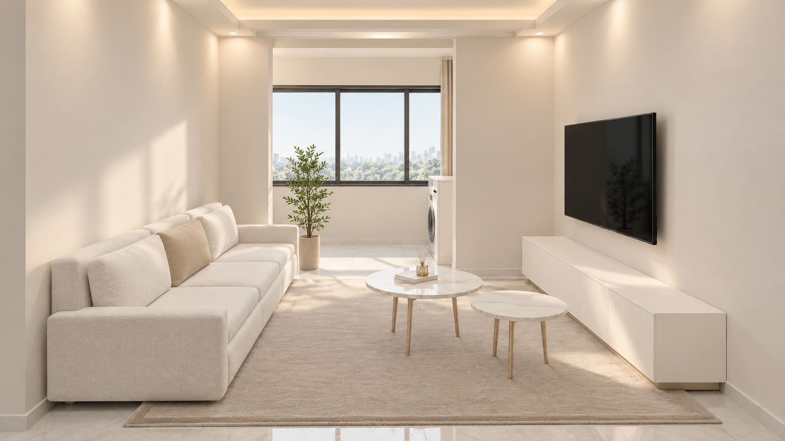
参考案例 / 居间 · 香槟珍珠
用户型和家具布局确定空间关系，再用效果图理解风格。在工作台中查看鸟瞰与漫游，继续调整物件、材质和方案。
识别墙体、门窗与房间，核对尺寸和入口关系。
结合居住需求调整家具、动线与收纳，保留可编辑方案。
先看风格效果，再逐步细化颜色、材质与空间表现。
查看图纸、工作台和导览；后续修改继续围绕同一方案。
最新交互案例
支持 2D 家具编辑、3D 鸟瞰与漫游。当前工作台已更新马桶构件、踢脚线、收口和材质，并统一顶面与顶部灯具的显示逻辑。
进入工作台 ↗独立页面打开，避免介绍页预先加载整个 3D 场景。需浏览器支持 WebGL；本轮构建与几何检查通过，尚未完成画面及帧率实测。
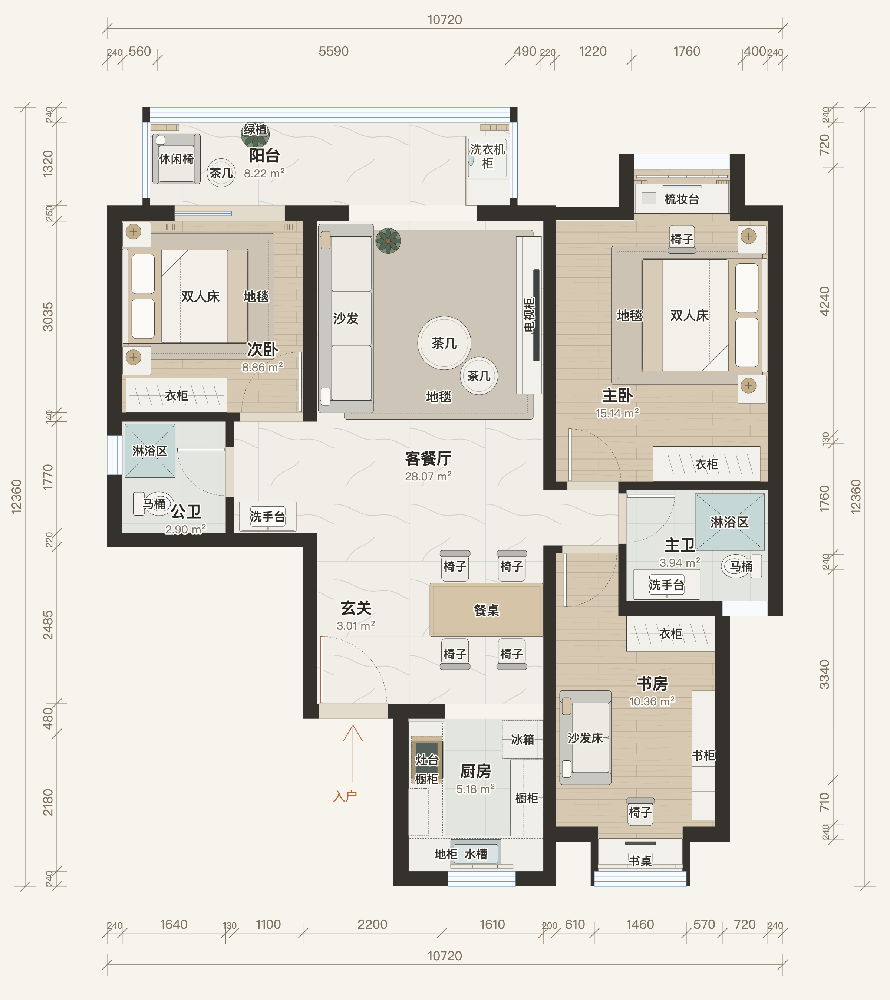
点击打开可编辑方案 ↗以下为案例保留图纸，未随本轮工作台重新导出；当前编辑状态以工作台为准。
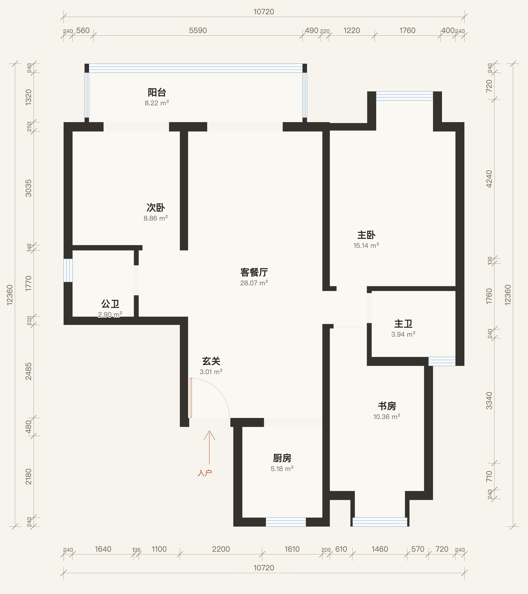
以下为既有 AI 概念效果图，未随最新材质和构件重新生成，不代表实时 3D 的逐像素效果。点击查看大图。
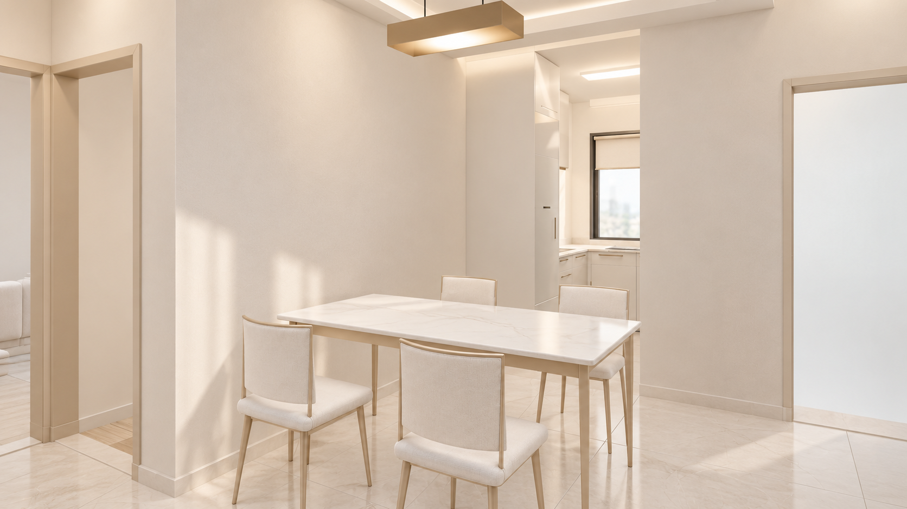
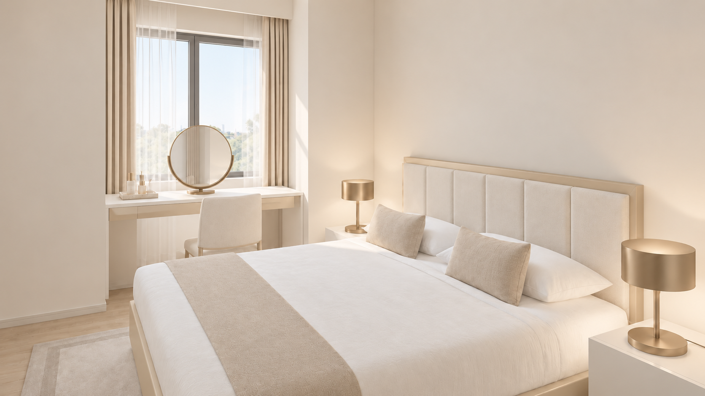
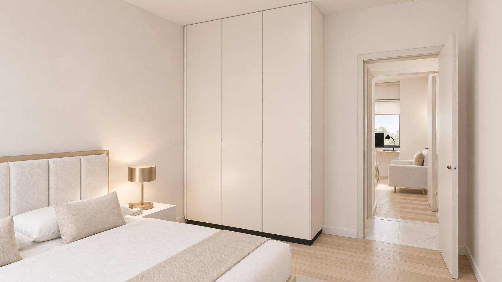
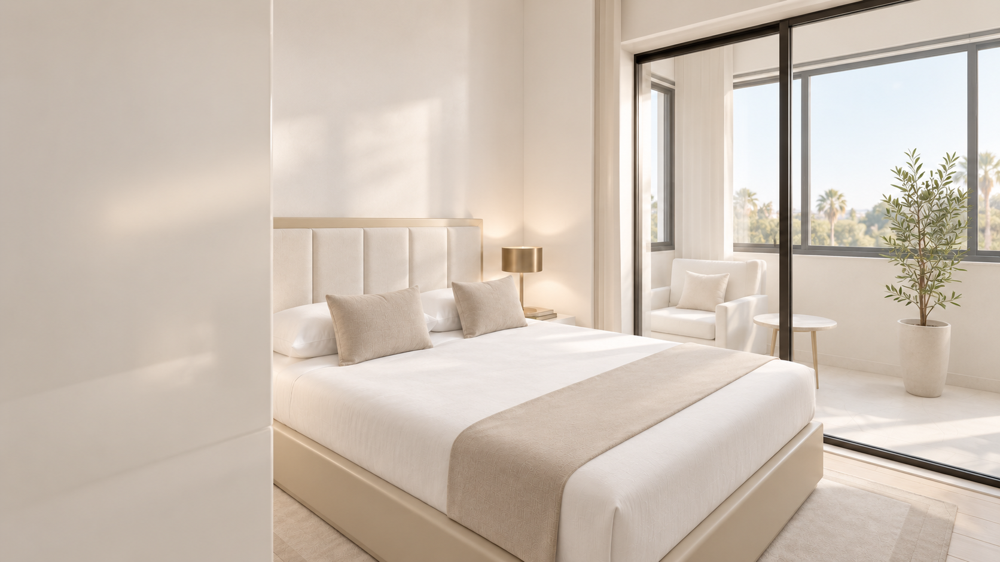
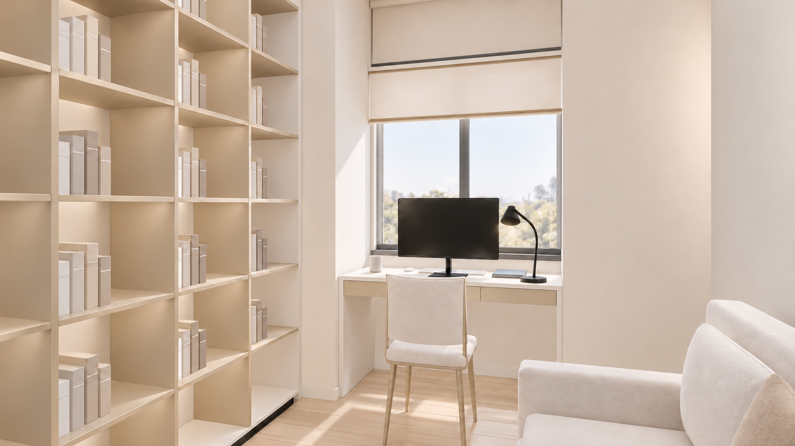
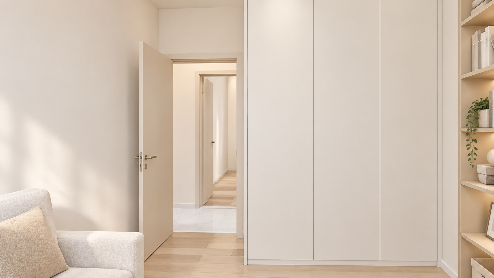
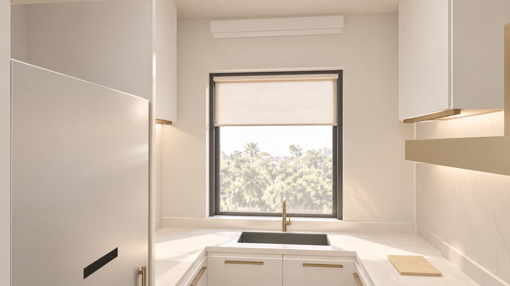
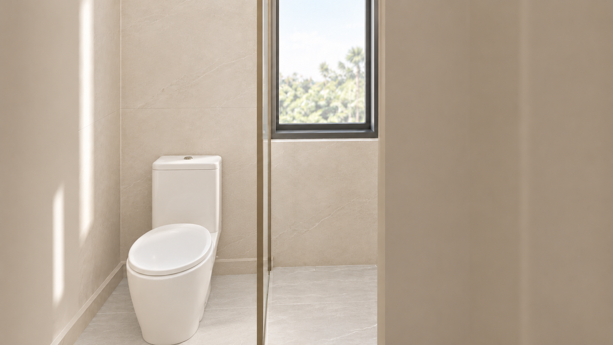
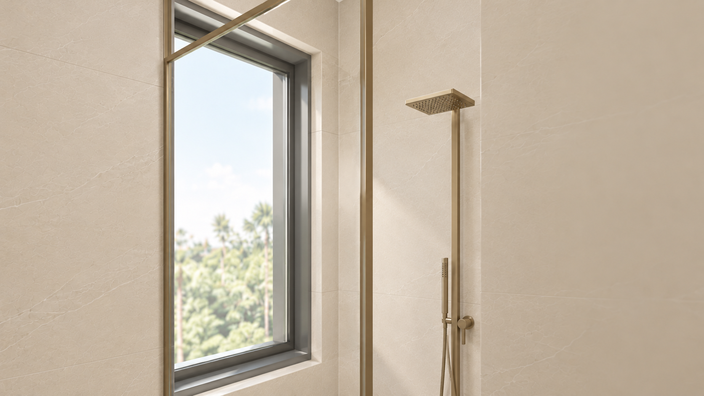
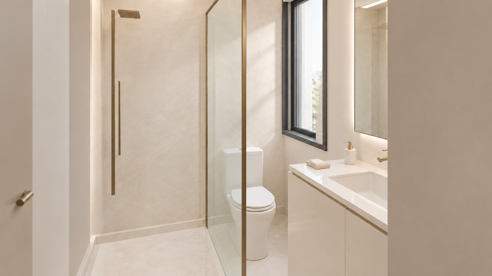
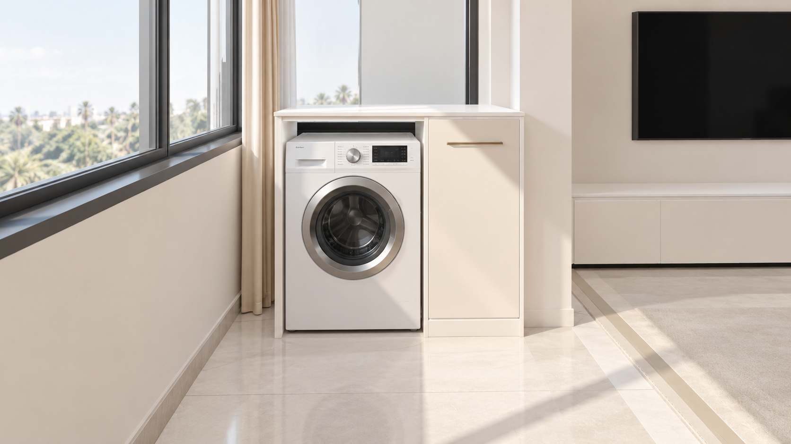
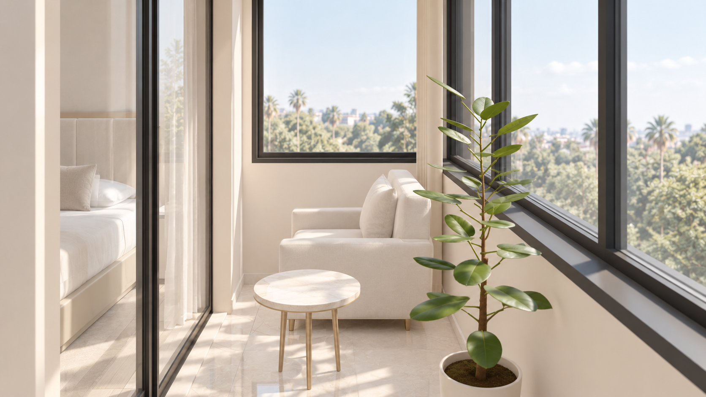
既有版本的 H5 导览视频，用于展示参观路线和视频交付形式，尚未使用本轮工作台重新渲染。
安装 Skill 后，提供一张户型图并描述居住需求即可开始。家具布局图和风格参考是可选资料，助手会引导你逐步确认。
使用 Interior Design，从这张户型图开始。我没有家具布局图和风格参考，请先核对户型，再建议家具布局和装修风格，逐步确认后制作可编辑的 2D/3D 工作台及装修效果图。查看 GitHub 与安装说明 ↗
展示内容属于概念设计，不替代现场测量和施工图。案例素材保留原有权利，源码许可与素材权利分别适用。